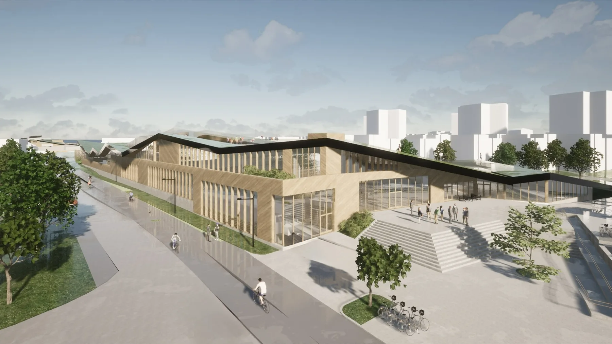
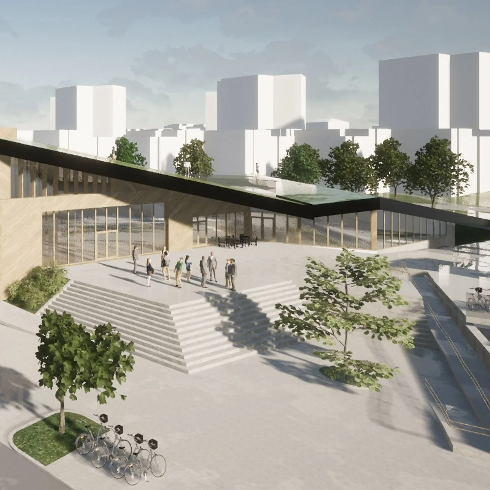
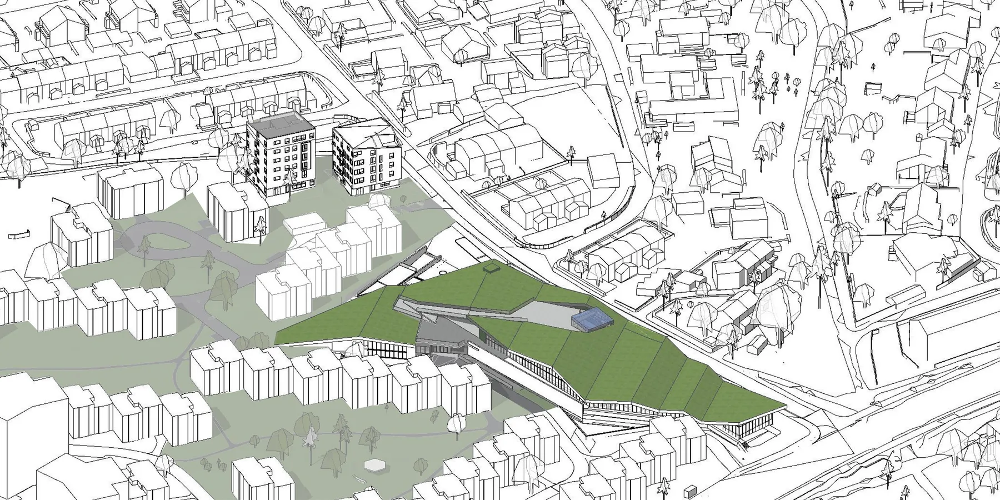
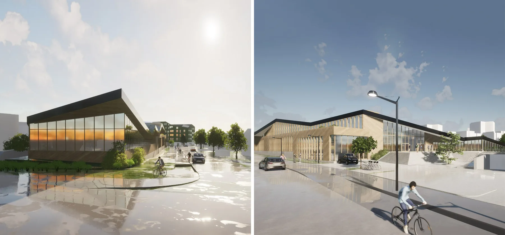
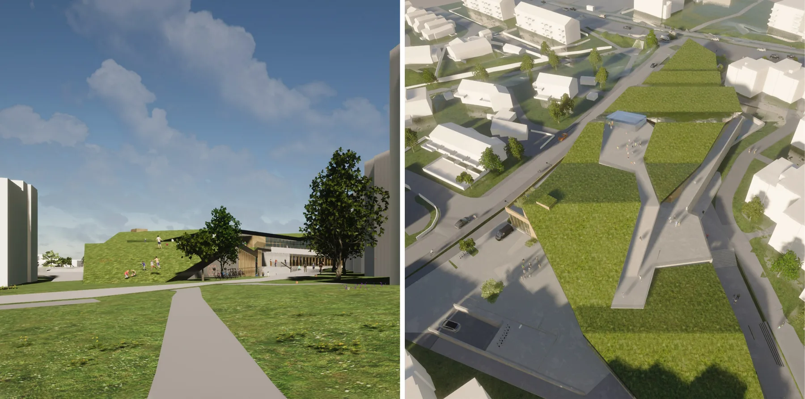
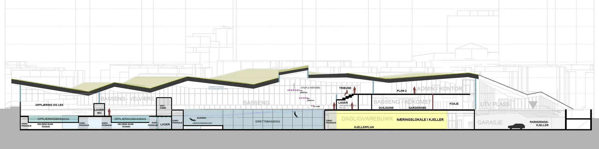
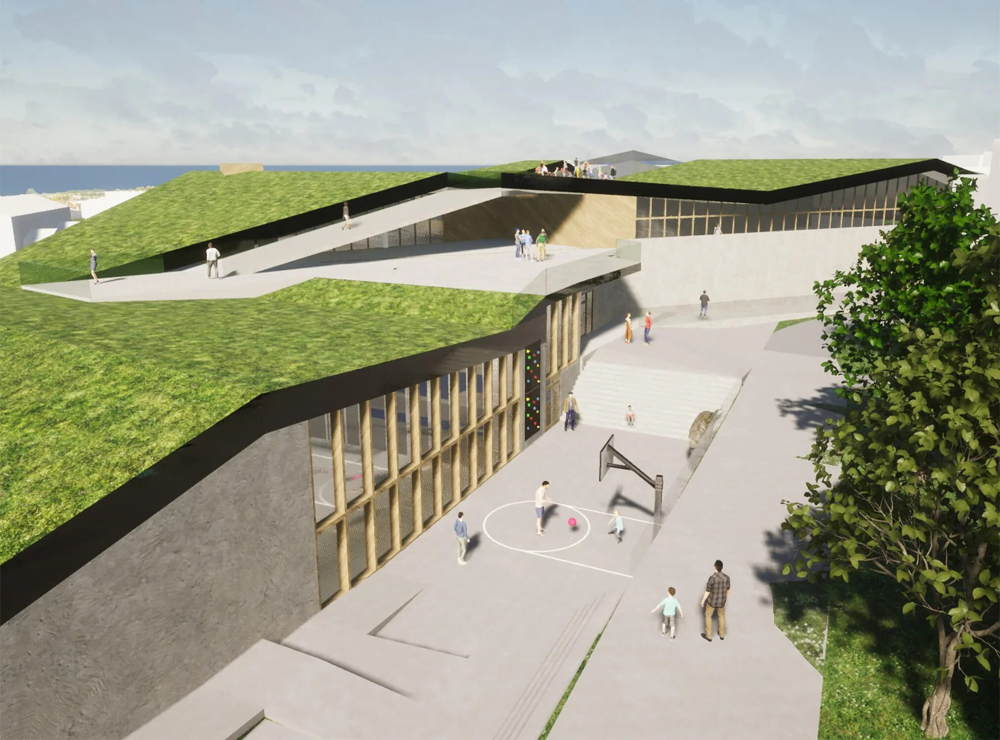

Moholt bydelsbasseng og studentby
05Mulighetsstudie
Offentlig · Kultur · idrett · Undervisning · student · Bolig · fritid · Næring · kontor · Helse · rekreasjon · livssyn · NybyggSe bildegalleri

- Byggherre
- Trondheim Eiendom og SIT Studentsamskipnaden i Gjøvik, Ålesund og Trondheim
- Mulighetsstudie
- 2022
- Arkitektene
- Ingvild E.Kjær, Rita Morken, Iver B. Blomsøy, Thov Sanden
Om prosjektet
Mulighetsstudien undersøker hvordan et bydelsbasseng kan kombineres med studentboliger og andre funksjoner på Moholt. Bygningene tilpasses terrenget og parkdraget, med vekt på sambruk og nye møteplasser.
Bilder & tegninger7 bilder



Forstørr

Forstørr

Forstørr

Forstørr

Forstørr

ForstørrLa oss begynne med en samtale